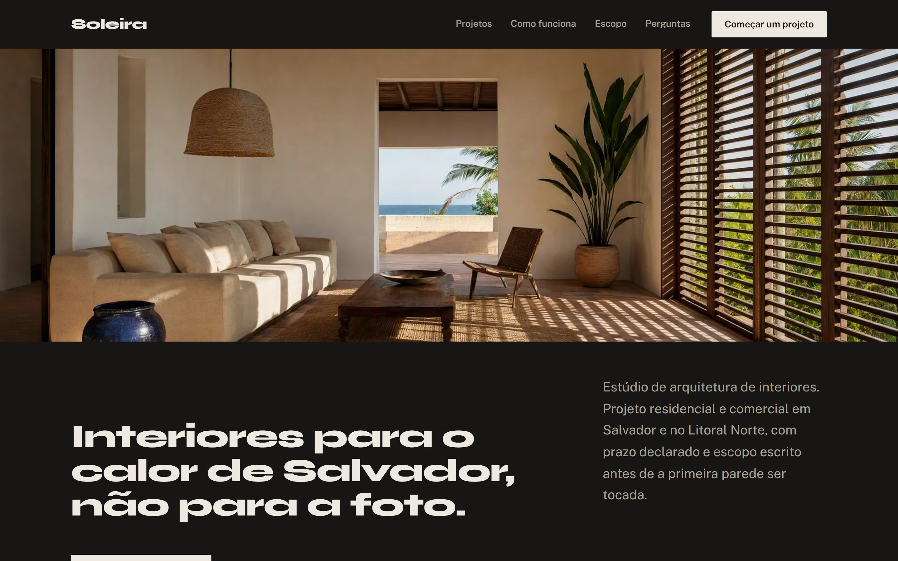
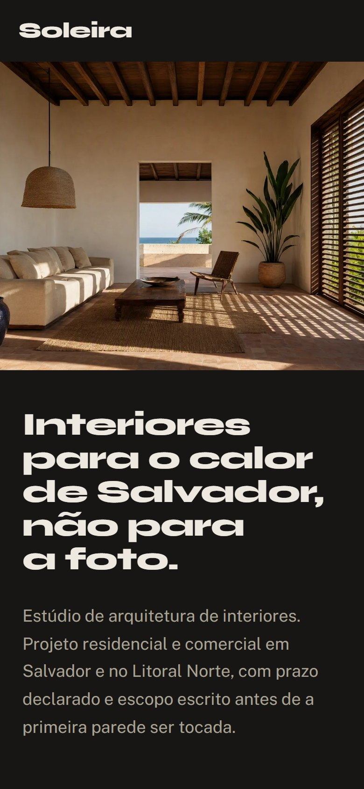

Estúdio de interiores em Salvador, com projeto residencial e comercial.
Responder antes da primeira conversa o que trava a contratação: prazo, escopo e o que o cliente recebe.
Levar quem chega decidido direto para uma conversa, no celular ou no computador.